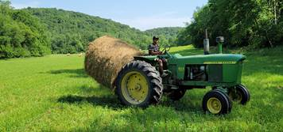
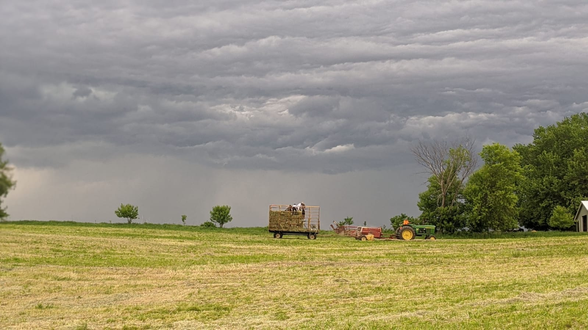
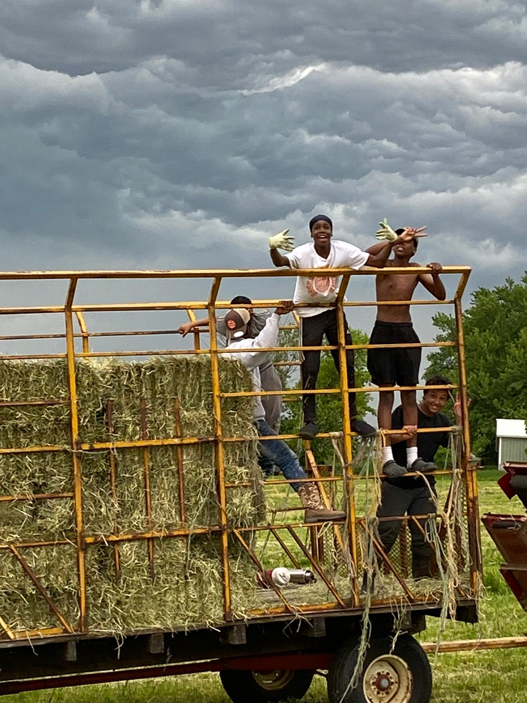
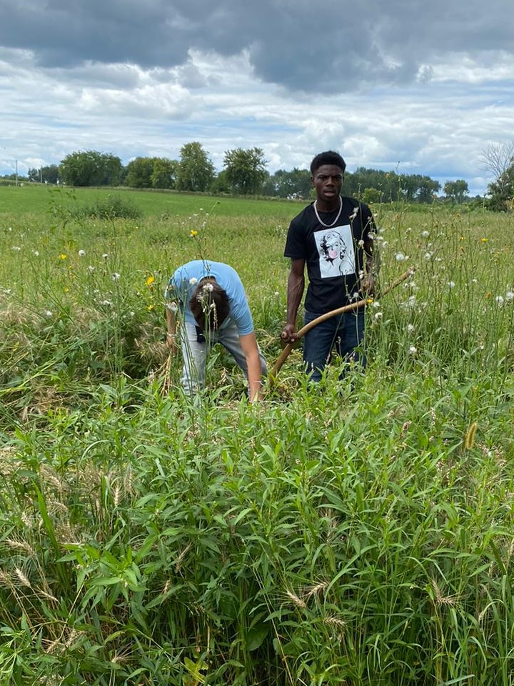

Hope Farm School is a boarding school for inner-city youth. Its mission is to disciple, train, and educate young men in the Spirit of Jesus Christ, all in a farm setting.
Through Farmboy Industries we teach our students business principles, and make the learning real by selling our products. Proceeds support our school.
Visit hopefarmschool.com!
Please call Widdy at 612-710-2868 with questions.
Moving the round bales 
Boys baling hay 
Boys SATWATing 
Tedding hay 
Hope Farm School - Driving a Tractor